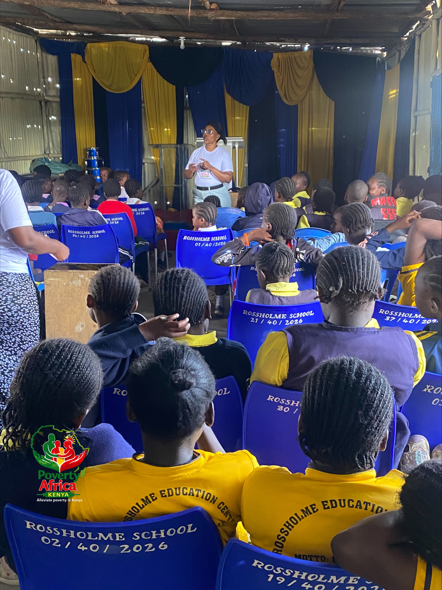
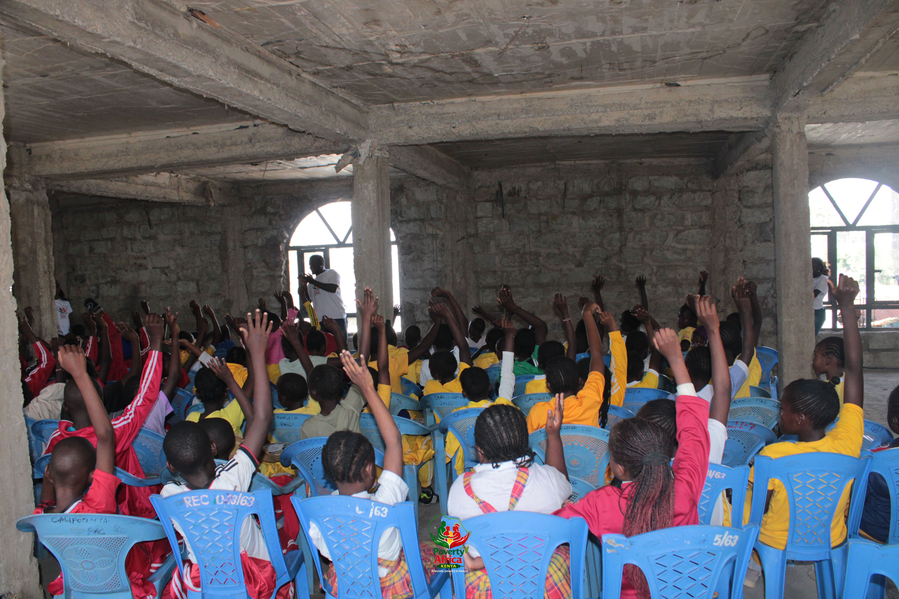
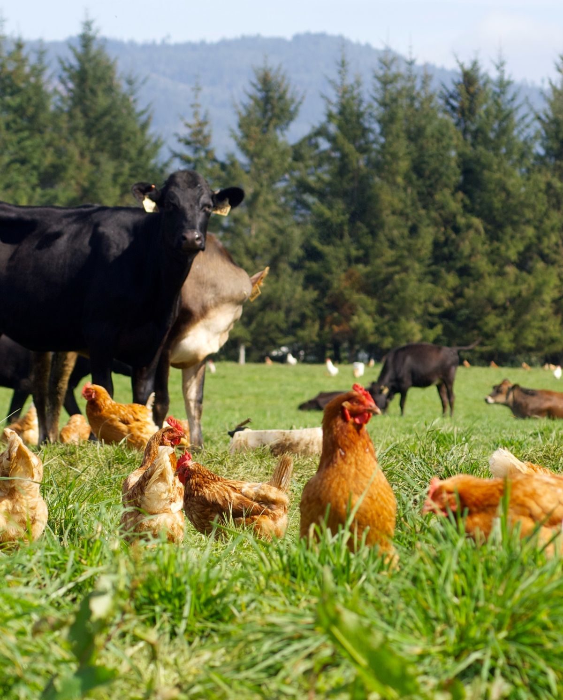

Education
We support young people with access to digital skills, learning opportunities, scholarships and career guidance. The programme connects learners with opportunities that can help them build practical skills and prepare for the future.

Community Empowerment
We work with communities to strengthen financial literacy, entrepreneurship and household livelihoods. Through savings groups, business training and market linkages, communities are supported to build more sustainable sources of income.

Peer Program
Our peer programme creates safe spaces where young people can access mentorship, life skills and peer support. The programme also addresses period poverty and promotes positive wellbeing among boys and girls.

Mental Health & Nutrition
We promote holistic wellbeing through mental health awareness, peer support and nutrition education. The programme works with young people, mothers, caregivers and community health actors to strengthen healthier communities.

4K Clubs for Schools & Institutions
The 4K Clubs programme introduces learners to practical agriculture, environmental stewardship, entrepreneurship and nutrition. Through school demonstration farms and hands-on learning, students develop practical agricultural skills and an interest in sustainable food systems.

4K Smart Farming for Community
We support rural households to improve food production and livelihoods through climate-smart farming practices. Communities are introduced to practical, affordable and environmentally responsible approaches suited to local conditions.

Livestock Farming
The livestock programme supports households to strengthen livestock production as a pathway to improved food security and household income. Farmers receive practical knowledge on animal husbandry, feeding, production and sustainable livestock management.

Climate-Resilient Agriculture
We help farming communities adapt to changing climate conditions by promoting resilient crops, responsible water management, sustainable land practices and climate-smart agricultural techniques that strengthen long-term food security.